1. System information and location
- Operating system
- Windows 10, version 10.0.19045.6456
- Computer hostname
- LAPTOP-6PB0QLAO
- Network DNS suffix
- kean.edu
2. Open Command Prompt
Opened Windows Command Prompt to perform the lab commands.
LAB 1.1
Opened Windows Command Prompt to perform the lab commands.
ipconfig /?Executed ipconfig /? and viewed the available options.
ipconfig /all, /release, /renew, and /flushdns help inspect network settings, troubleshoot DHCP leases, and clear the DNS resolver cache.
ipconfig /renew.
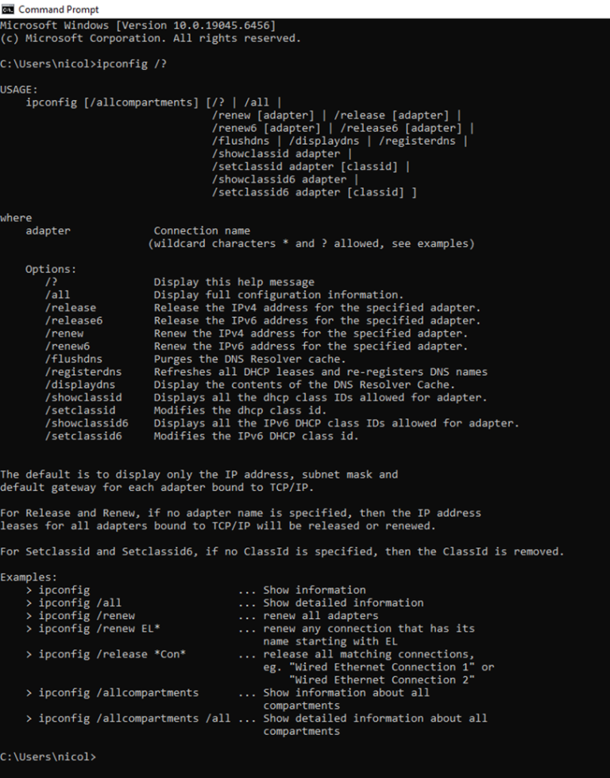
ipconfig /? command output.ipconfigThe active adapter is Wireless LAN adapter Wi-Fi.
The subnet mask distinguishes the network portion of an IP address from the host portion.
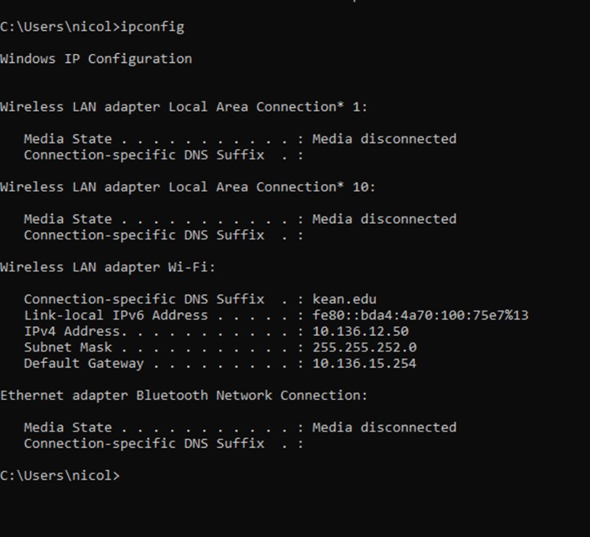
ipconfig output.ipconfig /allHostname: LAPTOP-6PB0QLAO. DNS suffix search list: kean.edu. The visible physical address 88-D8-2E-04-5A-3E belongs to a disconnected Microsoft Wi-Fi Direct Virtual Adapter, not necessarily the active Wi-Fi interface.
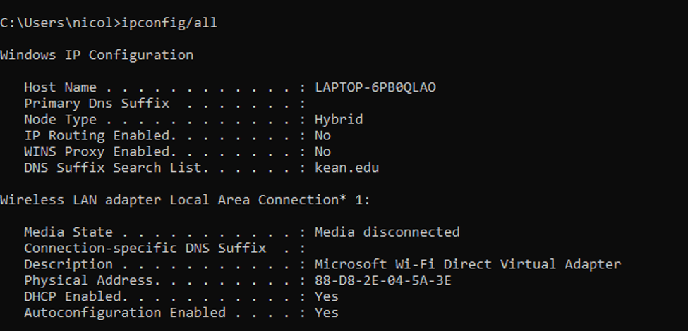
ipconfig /all output.Opened Internet Protocol Version 4 (TCP/IPv4) Properties. The window shows “Obtain an IP address automatically” and “Obtain DNS server address automatically.” The address obtained through DHCP was 10.136.12.50 in Step 4; no manually entered address appears in the properties window.
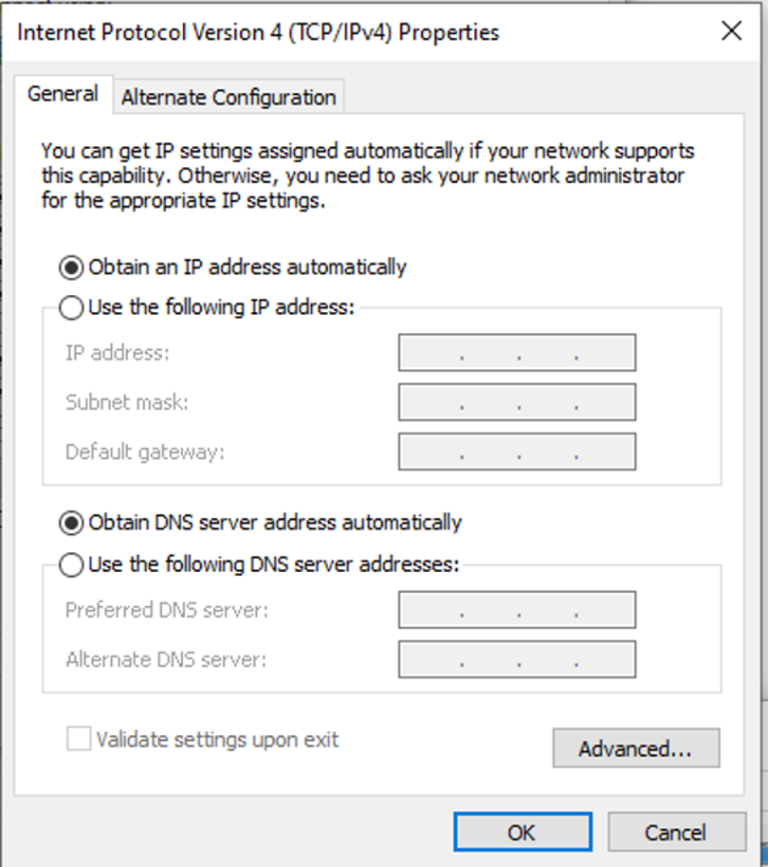
Change IP address: Successful.
LAB 1.2 · LAB A
ping /?Executed ping /? to view the available options.
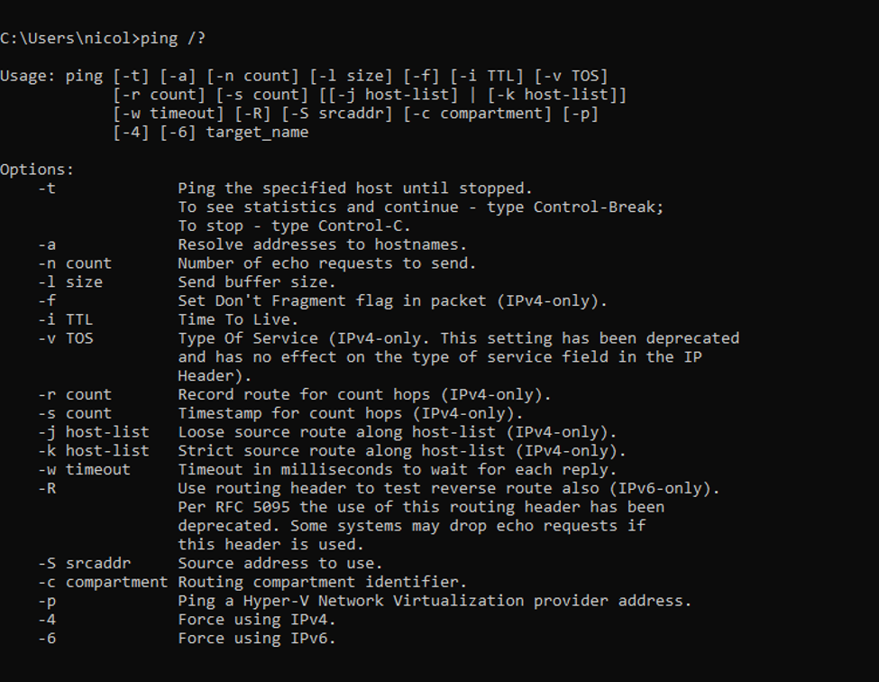
ping /? command output.Pinged the default gateway, 10.136.15.254. Four packets were sent and received, with zero packet loss. Response times were 4 ms, 37 ms, 6 ms, and 5 ms.
Time To Live limits the number of router hops an IP packet may traverse before being discarded. The observed reply TTL was 255.
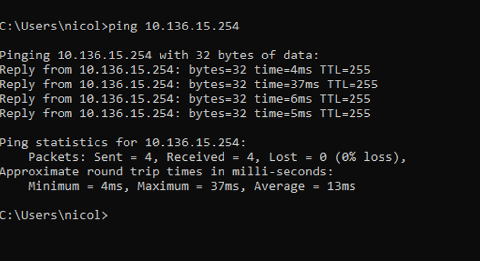
Compare the responding IP address with the intended destination. On the local network, the ARP table can show the associated MAC address; however, ping and ARP alone cannot authenticate the identity of the remote computer.
tracert www.kean.eduThe trace reached webfarm.kean.edu (10.100.1.33) in six hops, with five intermediate nodes. Hop 2 (10.0.6.26) had the longest single response, 31 ms.
| Hop | IP address / hostname | Response times (ms) |
|---|---|---|
| 1 | 10.136.15.254 | 4, 4, 4 |
| 2 | 10.0.6.26 | 31, 2, 2 |
| 3 | 10.0.6.19 | 4, 1, 1 |
| 4 | 10.0.6.12 | 4, 3, 2 |
| 5 | 172.16.0.14 | 6, 2, 2 |
| 6 | enlowhall.kean.edu (10.100.1.33) | 7, 2, 1 |
Five intermediate hops, followed by the destination at hop 6.
Hop 2, 10.0.6.26, with one 31 ms response.
Cannot determine from the single supplied Kean traceroute. Changes may be caused by load balancing or routing changes.
Observed topology: Computer → 10.136.15.254 → 10.0.6.26 → 10.0.6.19 → 10.0.6.12 → 172.16.0.14 → Kean server (10.100.1.33).
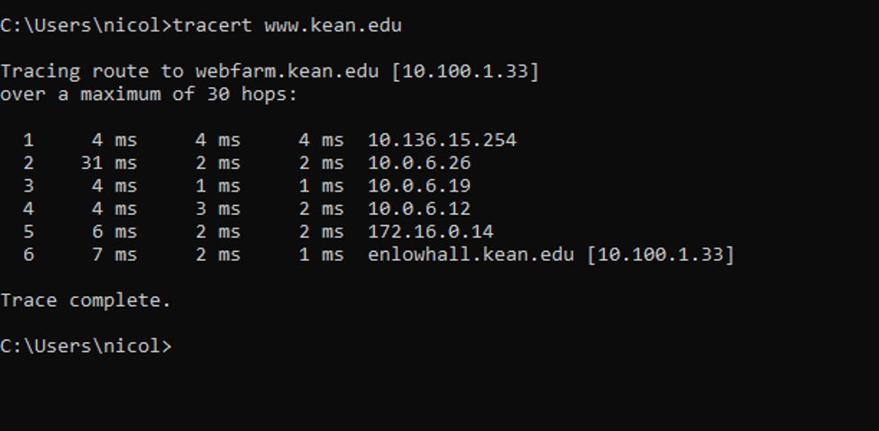
tracert www.google.comThe supplied screenshot for Google shows a successful ping www.google.com test, not a traceroute. No Google traceroute output was included in the provided material.
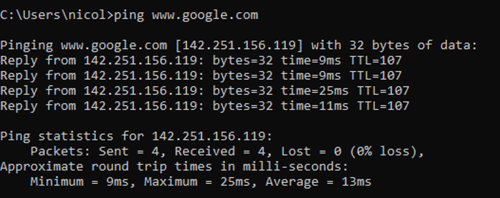
www.google.com; this is not tracert output.LAB 1.2 · ARP
arp /?arp -a.
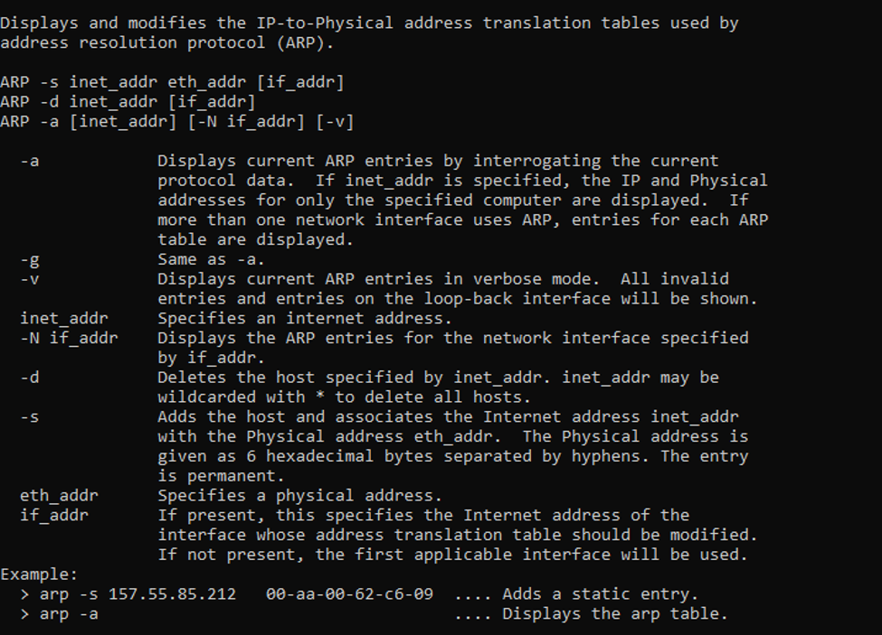
arp -aFor interface 10.136.12.50, the gateway 10.136.15.254 appeared as a dynamic entry with MAC address 64-6a-52-f4-2d-00. Broadcast and multicast static entries also appeared.
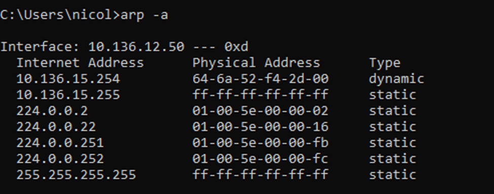
arp -a table.The screenshot shows arp -d* entered without a space before the wildcard, followed by ARP usage/help output. This does not demonstrate that the entries were deleted. The documented Windows syntax for deleting all entries is arp -d *, generally run from an elevated Command Prompt.
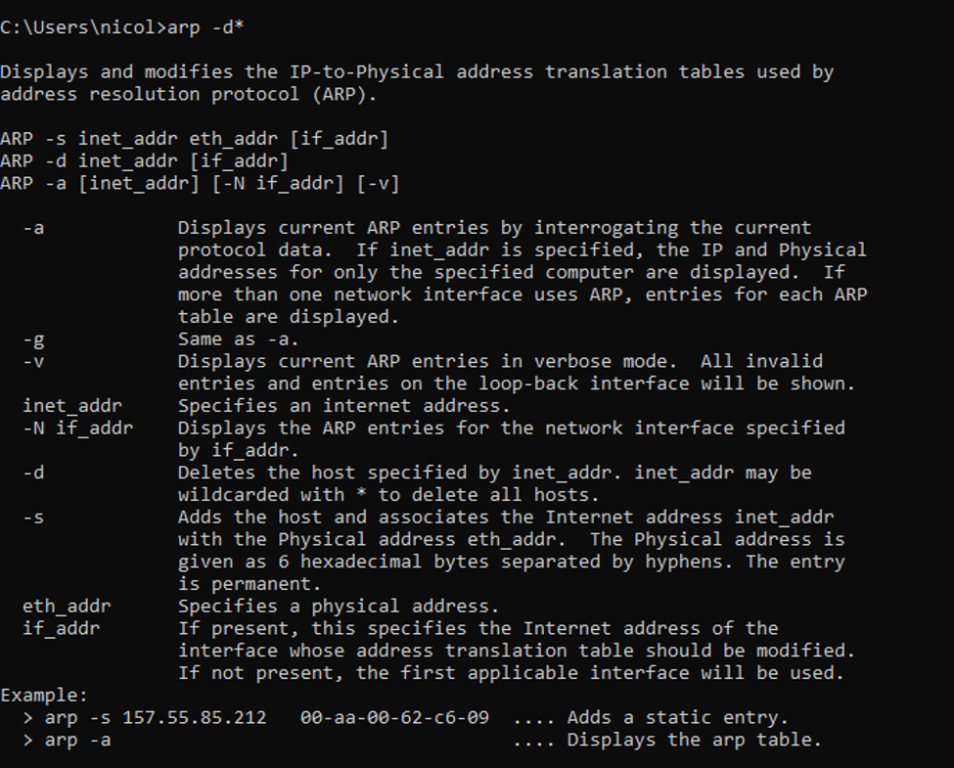
An elevated Command Prompt is generally required to delete all ARP entries. The supplied deletion screenshot shows the command and help output, but does not independently confirm that the prompt was elevated.
arp -aThe later ARP table still contains the dynamic gateway entry 10.136.15.254 → 64-6a-52-f4-2d-00. The supplied evidence therefore does not establish that the ARP cache was empty.
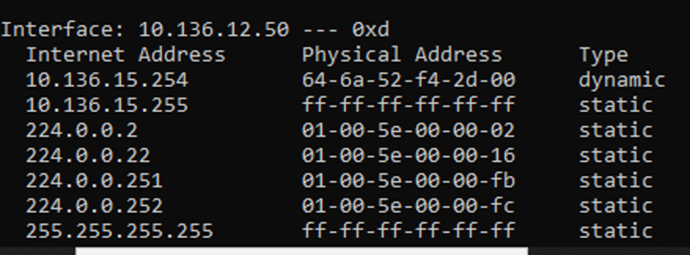
The previously supplied gateway ping is shown in Figure 6. No separate screenshot was provided to confirm a new ping after the ARP deletion attempt.
arp -aCommunicating with a local device can trigger ARP address resolution, repopulating a dynamic IP-to-MAC mapping in the ARP cache. The supplied screenshots do not establish that this sequence was completed after clearing the cache.
REFLECTION
The ARP deletion attempt displayed help instead of confirmation, likely because the entered syntax lacked a space before the wildcard. A successful retry has not yet been documented. No evidence was provided for changing the campus IP configuration, the DNS ping, or the remaining traceroutes.
SUMMARY
The lab demonstrated how ipconfig displays TCP/IP configuration, ping tests connectivity, tracert reveals a route to a server, and arp displays local IPv4-to-MAC mappings. The recorded gateway ping completed with no packet loss, and the Kean traceroute reached its destination. Some required procedures remain to be documented.